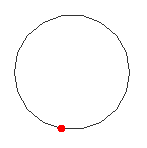

Agents
| Theme | Objectives (after the course, you ...) |
| Agents |
|
Episode 12: Agents, reinforcement learning, and robots
An agent is a system that perceives an environment and acts in it. This definition covers a thermostat, a chess program, a delivery robot, and an LLM that chooses tools. The important shift is from predicting an answer to selecting an action whose consequences change what happens next. An agent therefore operates in a loop: observe, update an internal state, choose an action, and observe the result.
Rational action under limited information
A rational agent chooses the action expected to perform best according to its performance measure, given what it has perceived and what it knows. Rational does not mean omniscient or morally good. A route planner can be rational while choosing a road that later becomes blocked; it acted on the information available. Nor does rationality imply unlimited computation. Real agents have deadlines, finite memory, incomplete models, and limited energy. Bounded rationality asks what good action is possible within those limits.
Specifying the performance measure is therefore a design decision, not bookkeeping. A delivery system rewarded only for speed may drive dangerously; a chatbot rewarded for engagement may prolong an unhelpful conversation. Proxy measures are useful because goals such as “help the user” are difficult to calculate, but optimizing a proxy can produce unintended behaviour. This is the beginning of the alignment problem: how can the behaviour produced by an objective remain consistent with human intentions and constraints?
A language model maps context to likely tokens. An agentic system places such a model inside a loop with memory, tools, an action policy, observations, and stopping conditions. The model may propose an action; the surrounding system validates and executes it. Calling an API is not magically intelligent: it expands what the system can affect and therefore increases the need for permissions, monitoring, and recovery.
Agent architectures
A simple reflex agent uses condition–action rules: if the temperature is low, turn on heating. It is fast but fails when the current observation does not reveal everything relevant. A model-based agent maintains an internal state—such as an estimate of where a robot is—and updates it as observations arrive. A goal-based agent evaluates actions by whether they reach a desired state, often using search or planning. A utility-based agent compares trade-offs among outcomes, for example speed, safety, energy, and comfort. A learning agent changes its behaviour from data or experience. Practical systems combine these ideas rather than fitting one box.
| Architecture | Question it answers | Typical limitation |
|---|---|---|
| Reflex | What rule matches now? | No memory or foresight |
| Model-based | What state am I probably in? | The model may be wrong |
| Goal/utility-based | Which future outcome is preferable? | Planning can be expensive |
| Learning | How should behaviour change with experience? | Needs suitable feedback and safe exploration |
Modern LLM agents often implement a repeated plan–act–observe cycle. The model receives a goal and current context, proposes a tool call, receives the tool result, and continues until it returns an answer or reaches a stopping rule. Useful components include a tool registry, working memory, longer-term retrieval, a planner, and an evaluator. Reliability comes from engineering the whole loop: typed tool interfaces, least-privilege permissions, time and cost limits, validation of outputs, logging, and human approval for consequential actions.
Reinforcement learning: learning from consequences
In supervised learning, a training example normally supplies a target answer. In reinforcement learning (RL), an agent instead interacts with an environment. At time t it observes state s, chooses action a, receives reward r, and moves to a new state. A policy specifies how actions are selected. The objective is not necessarily the next reward but the expected return: the accumulated future reward, often discounted so that distant rewards count less.
The central difficulty is delayed consequence. A chess move receives no immediate label saying whether it was good; its value may become visible many moves later. RL must assign credit across a trajectory. In a Markov decision process, the state is assumed to contain the information needed to predict the next-state and reward distributions. This abstraction is powerful, although real observations are often partial, making memory or belief-state estimation necessary.
Value functions estimate long-term return. The action-value function Q(s,a) asks: if I take action a in state s and then continue according to a policy, how much return should I expect? Q-learning updates an estimate toward the observed reward plus the best estimated value of the next state. In words:
new estimate ← old estimate + learning rate × (better target − old estimate)
The discount factor controls the weight of future rewards. The learning rate controls how quickly new evidence replaces old estimates. With neural networks, deep RL approximates values or policies for large state spaces, but training can be unstable and data-hungry.
Exploration, exploitation, and reward design
An agent faces an exploration–exploitation dilemma: use the action currently believed best, or try alternatives that may teach it something. An epsilon-greedy policy usually chooses the best-known action but sometimes explores randomly. Too little exploration locks in early mistakes; too much prevents consistent performance. In real systems, random exploration may be unsafe, so learning may begin in simulation, from logged data, or under explicit safety constraints.
Reward is not the same as the true goal. If a cleaning robot earns points for detecting dirt, it might avoid finishing the job so that dirt remains detectable. This illustrates reward hacking: the agent finds a high-scoring behaviour that violates the designer’s intent. Good design combines reward shaping with constraints, evaluation on varied situations, monitoring for distribution shift, and the ability to interrupt or correct behaviour.
Multi-agent systems
When several agents share an environment, each agent’s outcome depends on the others. Interactions may be cooperative, competitive, or mixed. Traffic participants coordinate implicitly; auction bidders compete; a robot team may divide tasks. The environment becomes non-stationary from one learner’s perspective because other agents are also changing their policies.
Game theory provides concepts such as best response and equilibrium, while multi-agent RL studies how policies can be learned through interaction. Communication can help agents coordinate, but messages can be incomplete, strategic, or deceptive. A system of individually capable agents is not automatically collectively effective: congestion, free riding, duplicated work, and cascades of mistaken assumptions can emerge. Evaluation should therefore examine system-level outcomes—fairness, robustness, resource use, and failure propagation—not only each agent’s score.
Robots: agents with bodies
A robot closes the agent loop in the physical world. Sensors translate light, force, sound, distance, or joint position into measurements. Actuators produce motion. Perception estimates relevant state; planning selects a route or sequence of actions; control turns that plan into motor commands. All stages are uncertain. A wheel slips, a camera is occluded, an object moves, or the environment differs from training.

This embodiment creates several gaps. The reality gap separates simulation from physical deployment. The semantic gap separates sensor values from meaningful objects and situations. The control gap separates a planned motion from what imperfect hardware actually does. Robust robots repeatedly estimate, act, measure the consequence, and correct. Autonomy is therefore usually layered: low-level controllers stabilize motion, planners choose actions, and people provide goals, supervise exceptions, or share control.
Robots also make stakes tangible. An LLM’s incorrect sentence can be checked before use; a robot’s incorrect movement can cause immediate harm. Safe deployment relies on redundant sensing, conservative operating envelopes, collision avoidance, emergency stops, testing, and clear allocation of responsibility. Human oversight must be actionable: a nominal supervisor who cannot understand or interrupt the system is not meaningful oversight.
Putting the pieces together
| Example | State/observation | Actions | Feedback |
|---|---|---|---|
| Tool-using LLM | Prompt, memory, tool results | Respond, search, call API | Task success, evaluator or user |
| Game-playing agent | Board or observation history | Legal moves | Score or win/loss |
| Delivery robot | Map and noisy sensors | Move, stop, manipulate | Progress, safety and energy |
The same vocabulary—environment, observation, action, policy, objective, and feedback—connects all three. Yet their engineering requirements differ because tools, other agents, and physical bodies introduce different consequences. When analysing any agent, ask: What can it observe? What can it change? What objective is actually optimized? How does it learn or plan? Where can uncertainty enter? Who can intervene? These questions are more informative than simply asking whether the system is “autonomous.”
Agency is a relationship between a system and an environment. Reinforcement learning provides one way to improve action through consequences; agentic frameworks connect models to tools and memory; robotics grounds the loop in uncertain physical reality. Capability depends on the entire loop, while safe and intended behaviour depends on objectives, constraints, monitoring, and human authority.
Before we can build an agent, we need a precise way to describe the job we're asking it to do. Russell and Norvig's classic recipe is PEAS: Performance measure (what counts as doing well), Environment (the world the agent operates in), Actuators (how it acts on the world), and Sensors (how it perceives the world).
As a worked example, here's the PEAS description for a robot vacuum cleaner:
| PEAS | Description |
|---|---|
| Performance measure | Amount of dirt cleaned, energy used, noise generated, time taken |
| Environment | A room (or house) with floor, furniture, dirt, stairs |
| Actuators | Wheels (steering, driving), brushes, vacuum suction |
| Sensors | Dirt sensor, bump sensor, cliff sensor, camera |
Once we have PEAS, we can also classify the environment itself along six standard dimensions:
- Fully vs. partially observable: can the agent's sensors see the complete state of the environment at every step?
- Deterministic vs. stochastic: does the next state depend completely on the current state and the agent's action, or is there uncertainty/randomness?
- Episodic vs. sequential: is each percept-action pair independent of the others, or do earlier actions affect later ones?
- Static vs. dynamic: can the environment change while the agent is deliberating?
- Discrete vs. continuous: are there a finite number of distinct states/actions, or a continuum?
- Single-agent vs. multi-agent: is our agent alone in the environment, or are there other agents (cooperative or competitive)?
For the vacuum cleaner above: partially observable (can't see dirt in the next room), stochastic (bumps and slips happen), sequential (where it already cleaned matters), dynamic (people walk through and make new mess), discrete (a finite grid of rooms and a finite action set), and single-agent (usually).
Now it's your turn. For each of the following three tasks, (a) write out a PEAS description in a table like the one above, and (b) classify the environment along all six dimensions, with one sentence justifying each choice:
- An autonomous drone delivering parcels across a city.
- A poker-playing agent at an online table with human opponents.
- A customer-service chatbot answering questions on a retailer's website.
Bonus (no extra points, just for fun): pick a job or hobby of your own and write its PEAS description. Is it harder or easier to pin down than you expected?
One reasonable PEAS description for the delivery drone:
| PEAS | Description |
|---|---|
| Performance measure | Parcels delivered on time, battery/fuel used, airspace violations avoided, no collisions |
| Environment | City airspace: buildings, other drones, weather, no-fly zones, delivery addresses |
| Actuators | Rotors (altitude, direction, speed), parcel-release mechanism |
| Sensors | GPS, camera, altimeter, obstacle-proximity sensors, wind sensor |
Environment classification: partially observable (can't see around buildings or predict other drones' exact paths), stochastic (wind, GPS drift, other traffic), sequential (route choices affect battery left for later deliveries), dynamic (weather and traffic change mid-flight), continuous (position, altitude, and speed are continuous quantities, unlike the vacuum world's discrete grid), and multi-agent (shares airspace with other drones and aircraft).
For the poker agent: performance measure is (expected) winnings; environment is the table, cards, and other players' visible actions/chip counts; actuators are bet/call/fold/raise actions; sensors are the visible cards and the game log. Classification: partially observable (opponents' hole cards are hidden — this is the whole game), stochastic (card deals), sequential (betting history within a hand matters, and bankroll carries across hands), dynamic only in the loose sense that other players act while you're "thinking" in real-time formats, discrete (finite cards, finite bet sizes in most formats), and multi-agent, specifically adversarial.
For the customer-service chatbot: performance measure is something like query resolution rate and customer satisfaction; environment is the website's chat interface and knowledge base/order database; actuators are the text (and maybe UI actions like "issue refund") it can send back; sensors are the customer's typed messages and account/order data. Classification: partially observable (can't see the customer's actual intent, only their words), stochastic (customers phrase things unpredictably), mostly episodic at the level of a single ticket but sequential within a conversation, dynamic in the sense that order status can change mid-chat, discrete (a finite vocabulary and action set, in practice), and single-agent from the chatbot's own point of view.
Descriptions will vary — what matters is that the performance measure is actually measurable, the environment/actuators/sensors are mutually consistent, and each of the six classifications is justified rather than just asserted.
A learning agent improves its behavior from experience rather than following a fixed rule. We'll train a real one — no theory derivation required, the algorithm is already correctly implemented for you. Follow Gymnasium's official "Training an Agent" tutorial (Blackjack environment).
The core training loop, already provided:
for episode in tqdm(range(n_episodes)):
obs, info = env.reset()
done = False
while not done:
action = agent.get_action(obs)
next_obs, reward, terminated, truncated, info = env.step(action)
agent.update(obs, action, reward, terminated, next_obs)
done = terminated or truncated
obs = next_obs
agent.decay_epsilon()
and the agent's hyperparameters are exposed right at the top of the script:
learning_rate, n_episodes, start_epsilon,
epsilon_decay, final_epsilon.
- Run the tutorial's full script as-is (it includes built-in plotting of the learning curve — episode reward and episode length over time).
- Change
learning_rateto a much smaller value (e.g.0.001) and a much larger one (e.g.0.5). Rerun with each and compare the learning curves. - Change
n_episodesdown to a small number (e.g.1000, from the tutorial's default which is much larger). Does the agent still learn a reasonable policy? - In 4–5 sentences: what did you observe about the learning-rate extremes — does a bigger learning rate always mean faster learning? Connect this to anything similar you've seen in this course (e.g. the trade-off you saw with learning rate in gradient descent for logistic regression).
agent.update() actually doing?
It's applying the Q-learning update rule: adjust the estimated value of the (state, action) pair you just took, using the reward you got plus the best value you think you can get from here on. You don't need to derive this rule yourself for this exercise — just observe how the agent's behavior changes as you change the parameters that control how aggressively/cautiously it learns and explores.
We've talked about agentic frameworks conceptually — now let's build one you can
actually run. smolagents is a lightweight, purpose-built-for-
teaching agent library from Hugging Face. Getting a first agent running is
genuinely four lines:
from smolagents import CodeAgent, InferenceClientModel
agent = CodeAgent(tools=[], model=InferenceClientModel(), add_base_tools=True)
agent.run("Could you give me the 118th number in the Fibonacci sequence?")
Setup note: this needs a free Hugging Face account and an access token (hf.co/settings/tokens) — no payment required, a free account includes enough inference credit for this exercise.
- Install with
pip install smolagents, get a free HF token, and run the code above. Read the printed trace — the agent will show its reasoning (its "Thoughts") and the code it decides to run. - Add your own tool — a Python function decorated with
@toolthat does something simple, e.g. converts a temperature between Celsius and Fahrenheit, or counts vowels in a string:from smolagents import tool @tool def celsius_to_fahrenheit(celsius: float) -> float: """Converts a temperature from Celsius to Fahrenheit. Args: celsius: the temperature in degrees Celsius """ return celsius * 9 / 5 + 32 agent = CodeAgent(tools=[celsius_to_fahrenheit], model=InferenceClientModel()) agent.run("What is 24 degrees Celsius in Fahrenheit?") - Ask the agent a question that requires it to use your tool, and one that doesn't. Confirm from the printed trace that it only calls your tool when it's actually relevant.
- In 3–4 sentences: describe, in your own words, the loop the agent went through — how did it decide when to use your tool vs. when to answer directly?